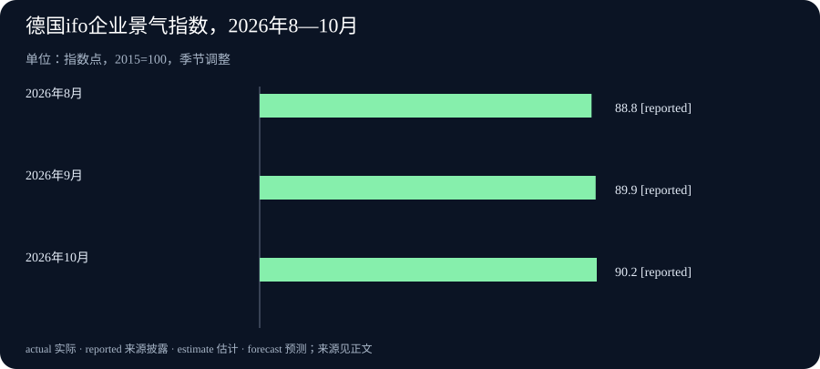

Daily Intelligence｜2026-10-27｜新模型处理图像，企业数字需要共同定义
北京时间｜研究截至2026年10月27日07:02:21（Asia/Shanghai，+08:00），优先窗口为10月26日07:02:21至27日07:02:21。本期四条主要来源均标10月26日，小时未披露，不能确认严格落在这24小时内。产品发布、未来交付计划、第三季度经营结果和10月企业调查分别说明。
Today's Thesis｜今天的判断
让模型看懂画面，也让经营数字说清含义
OpenAI发布GPT-6.1 Terra，把图片理解、屏幕操作和文字工作列为主要用途；Oracle公布企业数据平台的新能力，其中业务语义层计划在未来十二个月内提供，目的是让用户和人工智能（AI）按一致定义理解指标。前者处理画面里的信息，后者补充数字背后的业务解释，交付状态并不相同。
经营消息也需要这些解释。Verizon的通信服务收入增长，设备收入却下降；德国ifo企业景气指数小升，主要来自对未来的看法改善，对眼前经营的评价反而转弱。本报的判断是，今天最值得保留的区别在于：功能究竟能处理什么，一项数字究竟回答什么问题。把问题说清，才能看见变化，而不让一个漂亮总数遮住相反方向。
Executive Summary｜先看四条变化
- 一个面向视觉与屏幕工作的新模型发布。 GPT-6.1 Terra支持文字和图片输入、文字输出，官方列出产品照片匹配、技术图纸理解和应用界面操作等用途。使用外部工具须通过Responses接口，这是应用与模型之间传递请求和工具动作的通道；官方用途说明仍需与具体任务中的表现分开。
- 企业数据准备加入共同的业务定义。 Oracle公布AI数据目录和业务语义层等更新，其中两组核心能力明确计划在未来十二个月内提供。它们试图让“收入怎样计算”等解释随数据一起被使用，尚不能写成客户已取得新的准确率收益。
- 服务增长与设备销售回落同时出现。 Verizon第三季度总收入343亿美元，比上年同季增长1.5%；移动与宽带服务收入235亿美元，增长2.9%，设备收入下降9%。新签AWS协议价值超过20亿美元，是商业框架，不能全部计入本季销售或现金。
- 德国企业更期待未来，眼前评价却稍差。 ifo10月总景气指数从9月89.9升至90.2点。它是问卷调查指数，反映当前评价和未来六个月预期的组合，不能当作德国经济增长率。
AI Daily｜AI与产品
GPT-6.1 Terra：把图片、界面和文字任务列为主要用途
OpenAI的官方更新日志在10月26日宣布发布GPT-6.1 Terra，未披露具体小时。它是供应用接入的新模型选项，官方定位包括视觉推理、计算机界面操作，以及清楚自然的写作。这里的视觉推理，是从图片中的细节、位置和关系理解问题，再给出回答。官方发布记录
模型页列出的用途很具体：把产品照片与商品目录匹配、理解技术图纸、在应用屏幕上执行任务，以及起草和修改文字。它支持文字和图片输入、文字输出；该页没有把音频或视频列为支持的输入类型。理解一张产品照片与自动制作一段视频是不同任务，使用者应按自己的材料类型选择。模型功能与条件
屏幕工作还要有应用提供的工具。官方规定，模型调用外部工具需要Responses API，即应用向模型提出请求并接收工具动作的一种软件接口。不能只看到模型同时出现在另一个对话接口的列表里，就假定原有工具流程可以原样搬过去。对普通读者，更直接的理解是：能分析界面，与应用是否接好了执行动作的通道，要一起确认。
这些材料确认了新模型的发布、用途和支持范围，没有提供本报独立运行的任务结果。比如，把同一商品的正面图、包装图和不同规格图交给模型，是否都能匹配正确，还要看具体目录和检验方式。官方的产品定位有助于筛选任务，不能替每一类图片或屏幕操作保证成功，也不能从名称推算实际工作节省多少时间。
Oracle：让企业指标带上定义，部分核心能力仍待交付
Oracle于10月26日在AI World公布Autonomous AI Lakehouse的新能力，原文未披露小时。这个产品是连接和分析企业数据的平台，可以处理实时业务数据库以及外部数据表，供人员和AI助手查询。此次公告把重点放在数据的业务含义、访问控制和假设推演上。官方新公告
其中，业务语义层是给数据补上一套可复用的解释：指标如何计算、按哪些类别分组、不同层级怎样对应。例如，同叫“销售额”的数，可能按订单、发货或其他公司规则统计；先保存这些定义，才能让不同用户和AI在提问时有共同参照。这个例子用于说明用途，并非公告披露的某家客户实施案例。
另一组计划是让AI数据目录持续补充资料说明、来源关系和业务含义，帮助用户找到需要的数据。原文对这组能力和业务语义层都明确写道，将在未来十二个月内提供。因此，本期报道的是新公布的产品方向与安排，不能将这两组能力写成已经全面上线。
公告还列出外部数据表操作、数据工作区、集中访问控制和多维业务模拟等扩展。模拟让团队改变假设后计算可能结果，适合比较不同经营方案；模拟报告仍属于假设条件下的推演。Oracle没有在这份公告中提供这些计划能力带来的统一准确率收益，而且注明功能、交付时间与定价可能调整。理解它的意义，可以从企业数据将如何被解释入手，保留实际交付与使用效果的后续观察。
Business Daily｜商业与产业
Verizon：通信服务继续增长，设备销售出现另一种方向
美国电信运营商Verizon于10月26日公布第三季度结果，原文只列日期，没有实际发布小时。第三季度指2026年7至9月，其收入和客户连接变化发生在这一期间，不能理解成公告当天新增的规模。公司季度结果原文
公司报告总营业收入343亿美元，比上年同季增长1.5%；其中移动与宽带服务收入235亿美元，比上年同季增长2.9%。设备收入则下降9%。公司解释，换机量减少、设备使用周期变长及减少设备补贴，是设备收入回落的主要原因。这是公司的解释，不能仅凭一家公司就判断整个手机市场或所有运营商的需求。
服务与设备的差异有实际含义：客户继续使用通信网络，并不一定同时购买新手机。公司还披露，后付费手机净新增连接为40.6万。后付费指先使用、按账单结算；净新增是新接入减去离开的连接数量，不是全部新注册人数，也不等于新增账户数。看客户增长时，要先确认统计的是一条连接、一个账户，还是期末所有连接的存量。
本次结果同时宣布，与亚马逊云服务AWS签署价值超过20亿美元的新协议，为扩大分布式计算建立商业框架，以满足AI工作需求。分布式计算是让多处计算资源共同承担任务。协议提供了一个具体商业方向，但公告没有列出全部履约与收款时间，不能把协议总价值直接加到第三季度收入上。
这份结果更值得跟踪的，是持续服务的增长能否延续，以及新商业框架之后如何形成履约披露。已发生的季度经营数字、公司对设备销售的解释和未来合作安排，各自提供一种信息，不能用其中一项替代其余两项。
Macro Observation｜宏观观察
ifo调查：总体小升，预期比现状更乐观
德国ifo经济研究所于10月26日公布10月企业调查，原文未披露具体小时。总景气指数从9月89.9升至10月90.2，上升0.3个指数点。与此同时，企业对当前经营的总体评价下降，对未来六个月的预期改善，后者推动了总指数小幅回升。原始调查与同版数据表
调查每月收集约9000份企业回答，覆盖制造、服务、贸易和建筑。它分别问企业现在的生意是好、一般还是差，以及未来六个月会更好、不变还是更差。研究所将这些回答加工成指数，并作季节调整，尽量减少每年固定季节变化对比较的干扰。调查方法
指数以2015年平均值为100。90.2不是90.2%的企业乐观，也不是德国当前产出只有2015年的90.2%；100也不是经济增长或衰退的分界线。10月的0.3点变动反映这套调查指标的变化，不能改写成国内生产总值增长0.3%。
行业方向也有差异。研究所称，制造业现状与预期改善，企业计划增加生产；服务业的当前评价下降，预期则更积极。扩产计划有助于观察未来选择，但还没有替企业生产出产品。读这份调查时，最有用的区分是企业正在经历什么，以及它们希望接下来发生什么。
Signal Dashboard｜信号仪表盘
| 主线 | 本期新信息 | 继续观察什么 |
|---|---|---|
| GPT-6.1 Terra | 新模型列出图片理解、屏幕操作与文字工作用途 | 相同实际任务中的正确率、动作结果和耗时 |
| Oracle企业数据平台 | 公布业务语义层等安排，两组核心能力计划十二个月内提供 | 具体交付范围、定义维护与客户使用情况 |
| Verizon服务与设备 | 服务收入增长2.9%，设备收入下降9% | 持续使用网络与购买新设备各自的变化 |
| Verizon与AWS协议 | 新协议价值超过20亿美元 | 履约、相关收入确认与收款的后续披露 |
| 德国ifo调查 | 10月总景气90.2点，预期改善但现状转弱 | 预期能否在后续实际经营评价中得到支持 |
这里的产品用途、未来计划、公司季度结果和企业预期不采用同一种完成标准。表格将它们并列用于对照，不表示四条消息之间存在已证明的因果关系。
Deep Insight｜深度观察
机器能读到信息之后，仍要知道信息代表什么
一张图像和一张经营报表，看起来是两类材料，使用时却都离不开解释。图像里的相似外观可能对应不同规格，报表里的同名指标也可能采用不同口径。Terra提供新的视觉与屏幕任务选项，Oracle则计划让业务定义更容易随数据使用。把二者放在一起，本报提出的观察角度是：扩大机器能接触的信息范围之后，任务仍要说明该认出什么、依据什么判断。这个联系属于分析，并不说明两家公司已把产品集成在一起。
以产品照片匹配为例，假设两个包装外观很接近，区别只在容量和适用型号。仅凭“找一件相似商品”可能得到看似合理却不能使用的答案；如果任务要求同时核对包装文字、规格和目录编号，检查对象就更明确。屏幕操作也类似，按钮的位置只是信息的一部分，动作成功后系统是否保存了正确记录，才关系到工作是否完成。新模型的用途定位可以帮助发现适合尝试的工作，真正检验时仍应使用相近的材料、相同的要求和可以复核的结果。
企业数据的解释更容易隐蔽。一个团队说销售额增加，另一个团队可能问的是已交付产品的金额；同一个词如果没有共同定义，流畅回答反而可能让分歧更难发现。业务语义层所尝试解决的，就是将指标算法、分类和层级关系保存为共享规则。不过，规则的建立也需要业务人员参与。公司改变统计方式、组织结构或产品分类后，定义是否更新、历史数字还能否直接比较，仍需要持续维护。Oracle目前给出的十二个月安排，提供了观察这些能力如何落地的方向，尚未证明所有企业已解决了这类问题。
Verizon的结果展示了为什么这些区分值得保留。通信服务收入增加而设备收入下降，两项可以同时成立。把全部收入汇成一条增长线，适合了解公司总体规模，却会少掉客户怎样使用服务、多久更换设备的信息。手机连接净增又回答另一个问题：它计算接入与离开的差，不负责解释每个账户持有多少设备。新签AWS框架提供未来业务线索，但协议总价值与本季已确认收入也不在同一个时间范围。清楚的定义让这些数字可以一起阅读，而不会互相挤占位置。
ifo调查进一步把“解释”延伸到时间方向。企业对眼前经营的感受转弱，对未来更乐观，可能说明它们看到新的机会，也可能包含尚待实现的期待。总景气小升并没有抹掉现状的变化。接下来若当前评价也改善，乐观预期就得到更多支持；如果预期迟迟没有对应经营好转，则需要重新理解企业的希望来自哪里。仅凭这一次问卷，还不能替未来实际产出写下结论。
对读者而言，今天可以形成一种具体阅读习惯：先说清对象，再辨认时间与状态。模型是在处理哪种材料，企业定义的是哪项指标，金额属于已结束季度还是未来合同，调查是在问现在还是将来。这样做并不需要记住更多术语，而是让每条消息回答一个清楚的问题。等新结果出现时，也更容易知道自己原来的判断该在什么地方改变。
Tomorrow Watch｜明日值得追踪
- 图片与界面任务的实际结果。 关注Terra在有明确答案的商品匹配、图纸或屏幕任务中的后续评测，区分模型用途说明与经测试得到的表现。
- Oracle交付安排是否具体化。 后续文档是否给出业务定义的维护方式、产品可用范围和正式交付时间；本期十二个月安排仍保留计划性质。
- Verizon的两种需求。 继续观察服务增长、设备更换与客户连接变化，等待AWS框架的具体履约披露，不提前计入合同总值。
- 德国预期是否接近现状。 后续调查中，当前评价能否随预期一起改善；不预告尚未公布的产出结果，也不以单月小幅变化代替经济全貌。
One Chart｜一张图
德国ifo企业景气指数，2026年8—10月

| 月份 | 企业景气指数，2015年平均＝100 | 数据性质 |
|---|---|---|
| 2026年8月 | 88.8 | reported，来源披露 |
| 2026年9月 | 89.9 | reported，来源披露 |
| 2026年10月 | 90.2 | reported，来源披露 |
三项均取自ifo10月26日同一次发布的数据版本，经过季节调整。图中的reported表示已公开的调查指数，不是未来国内生产总值预测，也不是产值增速或企业乐观比例。10月比9月提高0.3个指数点；总指标回升主要由预期改善带动，当期经营评价下降。100代表2015年平均基准，不作为繁荣与衰退的分界线。原始表格
Quote of the Day｜今日引用
“What do we live for, if it is not to make life less difficult to each other?”
—— George Eliot（乔治·艾略特）
中文： 如果不是为了让彼此的生活少些艰难，我们活着又是为了什么？
出处为《米德尔马契》第八部第72章，多萝西娅的台词。她面对关于医生利德盖特的负面传言，希望查明情况并帮助曾帮助过自己的人；其他人物提醒谨慎处理，场景也保留了热心与审慎之间的张力。这不是作者一次公开演讲，更不意味着对每个解释都不加核实地相信。原著全文
小说初次分八部分出版于1871—1872年；该范围由南卫理公会大学SMU的布里德韦尔图书馆初版馆藏记录确认。中文为本报译文，不把人物的十九世纪处境改说成对现代AI或企业的评论。初版书目与出版年份
Action Items｜今天值得思考什么
- 这张图需要认出什么？ 给图片任务列出必须核对的规格、文字或位置，用同一批真实相近材料检查结果，先定义正确答案。
- 同名数字是否同一个口径？ 选一项团队常用指标，写清计算方式、统计期间和负责人，再决定怎样让助手读取和引用。
- 计划何时可以当成果？ 对Oracle新能力保留交付状态，等明确可用范围与实际表现后再更新判断。
- 增长来自持续服务还是设备销售？ 阅读Verizon后续结果时分别记录服务、设备、连接和合同金额，不将不同对象合成一项需求。
- 乐观预期获得支持了吗？ 对照ifo后续的现状与预期两项评价，看到实际经营变化后，再调整对调查信号的理解。
信息边界
本期固定研究截止为2026-10-27T07:02:21+08:00，优先窗口始于2026-10-26T07:02:21+08:00。OpenAI发布记录、Oracle公告、Verizon季度结果与ifo调查均标10月26日，小时未披露，不能确认严格24小时；旧的发布时间预告或会议排期也不替代实际发表时刻。
Terra按官方功能与调用条件报道，本报未独立测试。Oracle业务语义层与AI数据目录相关代理能力计划在未来十二个月提供，产品方向和交付时间可能改变。Verizon实绩对应2026年第三季度，AWS协议框架与未来履约分开；ifo数字是10月企业问卷及同版历史指数，当前评价与未来六个月预期分别理解。假设例子、跨事件联系和行动提示属于本报分析。